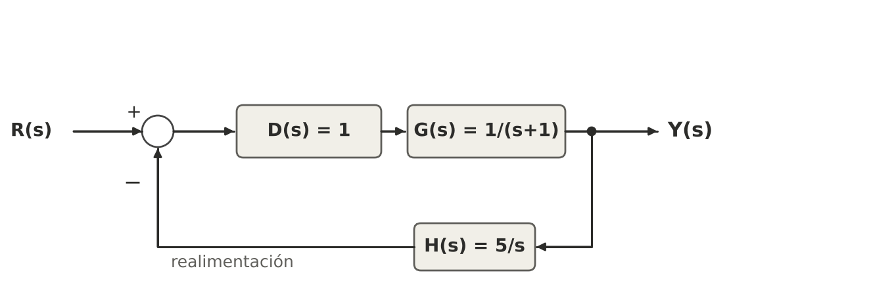
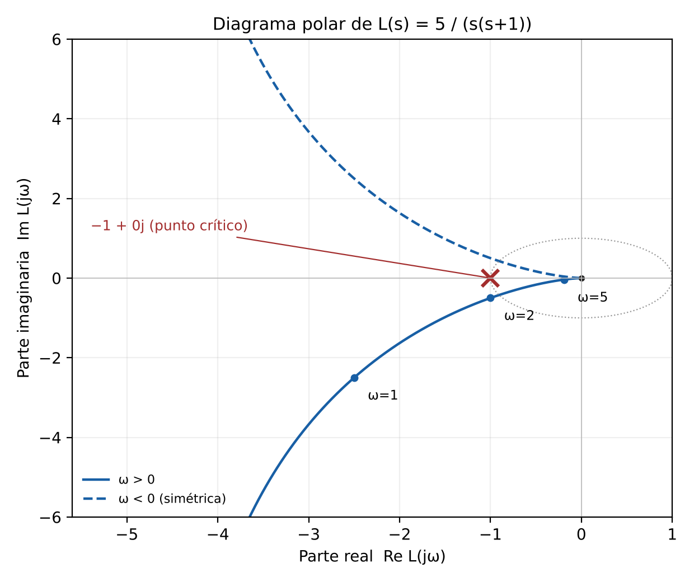
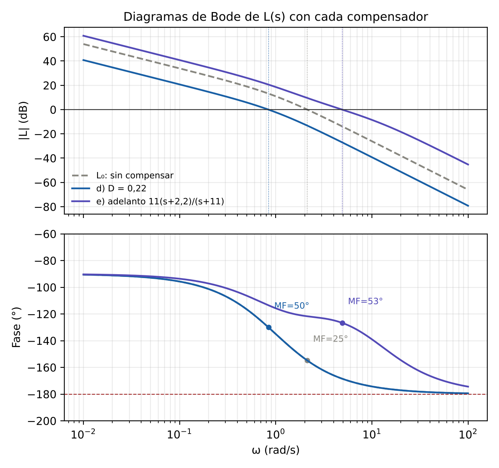
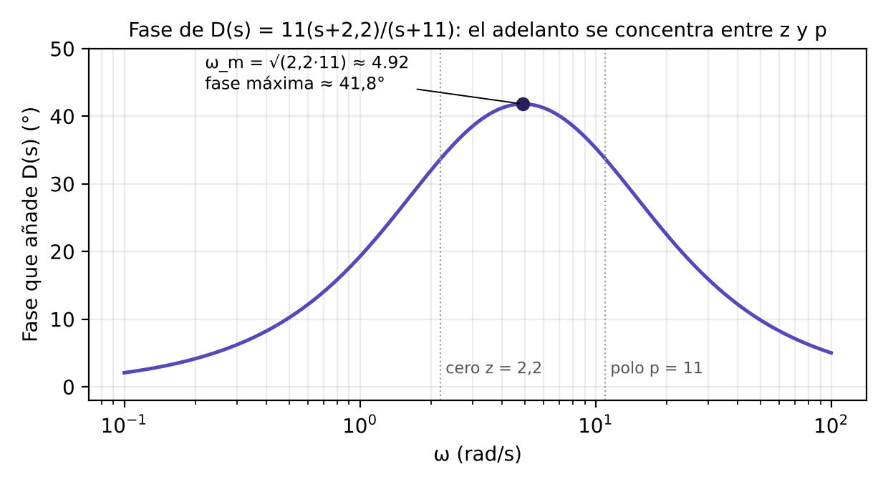
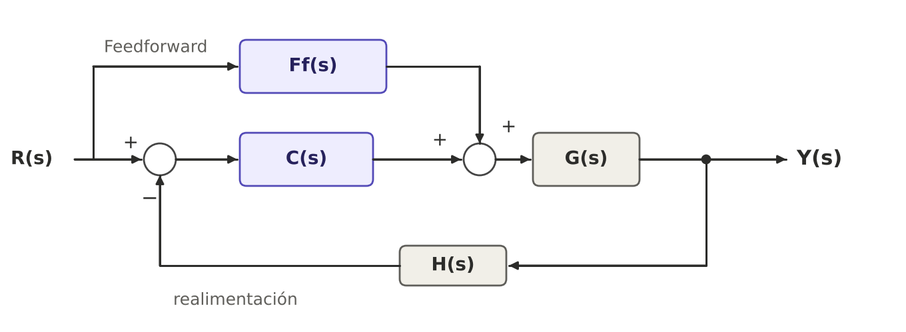
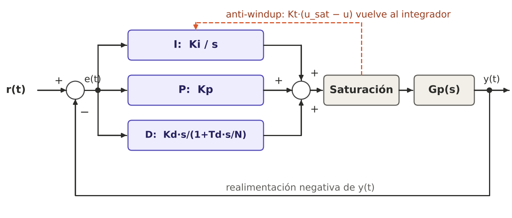

Practicar
Resultados
Qué sale en cada apartado y cómo se comprueba.
| Apartado | Resultado | Comprobación |
|---|---|---|
| a) Diagrama polar | Tercer cuadrante, MF ≈ 25°, MG = ∞ | Con ω = 2: Re = −1, Im = −0,5 |
| b) Estabilidad | Estable (N = 0, P = 0, Z = 0) | Routh: polos −0,5 ± j2,18 |
| c) Sin desfase | ω = √5 ≈ 2,24 rad/s | T(j√5) = 1 |
| d) MF = 50°, MG ≥ 10 dB | D(s) = 0,22 | MF = 50,0°, MG = ∞ |
| e) MF = 50°, Kv > 10 | D(s) = 11(s + 2,2)/(s + 11) | MF ≈ 53°, Kv = 11, MG = ∞ |
| C1) Feedforward + feedback | Y/R = G(C + Ff)/(1 + GC); Ff = 1/G si H = 1 | Con H = 5/s: Ff = s + 5/s |
| C2) PID modificado | Filtro en D, pesos b y c, derivada en la medida, anti-windup, feedforward | Figura 6 |
Practicar
Problema 1
Esquema, lazo abierto y cerrado, y los apartados a–e.
Cómo leerlo
El sistema está realimentado negativamente con G(s) = 1/(s+1), D(s) = 1 y H(s) = 5/s. Los números van con coma decimal. Cada apartado sigue el mismo orden: qué se pide, la cuenta paso a paso y una comprobación.
Esquema del problema

Lazo abierto y lazo cerrado
- En serie se multiplican: \(L(s)=D\,G\,H = 1\cdot\frac{1}{s+1}\cdot\frac{5}{s}=\frac{5}{s(s+1)}\). El «1/s» de H da un polo en s = 0.
- Lazo cerrado: \(T(s)=\dfrac{DG}{1+DGH}=\dfrac{1/(s+1)}{1+\frac{5}{s(s+1)}}\). Multiplicando arriba y abajo por s(s+1): \(T(s)=\dfrac{s}{s^2+s+5}\).
a) Diagrama polar de L(s)
- Sustituir s = jω: \(L(j\omega)=\dfrac{5}{j\omega(j\omega+1)}\).
- Como \(j^2=-1\), el denominador es \(-\omega^2+j\omega\). Multiplicando por su conjugado: \(L(j\omega)=\dfrac{5(-\omega^2-j\omega)}{\omega^2(\omega^2+1)}\).
- Parte real e imaginaria: \(\operatorname{Re}L=\dfrac{-5}{1+\omega^2}\), \(\operatorname{Im}L=\dfrac{-5}{\omega(1+\omega^2)}\).
- Módulo y fase: \(|L|=\dfrac{5}{\omega\sqrt{1+\omega^2}}\), \(\angle L=-90^\circ-\arctan\omega\).
| ω (rad/s) | Re L | Im L | |L| | ∠L |
|---|---|---|---|---|
| 0⁺ | −5 | −∞ | ∞ | −90° |
| 0,5 | −4,00 | −8,00 | 8,94 | −116,6° |
| 1 | −2,50 | −2,50 | 3,54 | −135,0° |
| 2 | −1,00 | −0,50 | 1,12 | −153,4° |
| 5 | −0,19 | −0,04 | 0,20 | −168,7° |
| ∞ | 0 | 0 | 0 | −180° |
Diagrama polar

- La curva no cruza el semieje real negativo a frecuencia finita, así que MG = ∞.
- Cruce |L| = 1: \(\omega^2(1+\omega^2)=25\), luego \(\omega_c^2=\frac{-1+\sqrt{101}}{2}\approx 4{,}52\) y \(\omega_c\approx 2{,}13\) rad/s. Fase \(-154{,}8^\circ\), así que MF ≈ 25°.
Comprobación
Con ω = 2 la fórmula da Re = −1 e Im = −0,5, que es el punto de la figura.
b) ¿Es estable tal y como está?
Criterio de Nyquist, en versión intuitiva
Imagina que −1 es un poste. Recorre la curva polar de ω = −∞ a +∞ y cuenta las vueltas alrededor del poste (N). Con P polos inestables en lazo abierto, Z = N + P son los polos inestables del lazo cerrado. Si Z = 0, el sistema es estable.
- P: los polos de L son s = 0 y s = −1, ninguno en el semiplano derecho. Así que P = 0. El polo en s = 0 se rodea por la derecha con un semicírculo pequeño.
- N: la curva no cruza el semieje real negativo salvo en el origen, así que no da vueltas alrededor de −1. N = 0.
- \(Z = N+P = 0\). El sistema cerrado es estable.
Comprobación con Routh
s² + s + 5 tiene coeficientes positivos. Sus raíces, \(s=\frac{-1\pm j\sqrt{19}}{2}\), tienen parte real −0,5 < 0.
Respuesta: sí, es estable. Con MF ≈ 25° el colchón es poco, y d) y e) lo mejoran.
c) ¿Para qué ω no hay desfase?
- \(T(j\omega)=\dfrac{j\omega}{5-\omega^2+j\omega}\). Su fase es \(\angle T = 90^\circ - \angle(5-\omega^2+j\omega)\).
- Fase cero exige que el denominador tenga parte real nula: \(5-\omega^2=0\), es decir, \(\omega=\sqrt5\approx 2{,}24\) rad/s.
- Comprobación: \(T(j\sqrt5)=\dfrac{j\sqrt5}{j\sqrt5}=1\). Ni desfase ni atenuación.
| ω (rad/s) | |T| | Desfase de T |
|---|---|---|
| 1 | 0,243 | +76,0° (adelanta) |
| √5 ≈ 2,24 | 1,000 | 0° |
| 3 | 0,600 | −53,1° (retrasa) |
Respuesta c)
ω = √5 ≈ 2,24 rad/s.
d) Compensador mínimo con MF = 50° y MG ≥ 10 dB
- Fase necesaria en el cruce: \(\angle L(j\omega_c)=-180^\circ+50^\circ=-130^\circ\).
- Un compensador de ganancia no cambia la fase. Así, \(-90^\circ-\arctan\omega_c=-130^\circ\), luego \(\omega_c=\tan 40^\circ\approx 0{,}839\) rad/s.
- Ganancia unitaria en ese punto: \(K=\dfrac{\omega_c\sqrt{1+\omega_c^2}}{5}=\dfrac{0{,}839\cdot 1{,}305}{5}\approx 0{,}22\).
- MG: como la fase nunca llega a −180° a frecuencia finita, MG = ∞ ≥ 10 dB.
Bode de L(s) con cada compensador

Matiz sobre MG
El requisito de MG no restringe nada aquí. Cualquier compensador de ganancia o de adelanto mantiene la fase por encima de −180°, así que MG siempre es infinito.
Respuesta d)
D(s) = 0,22 (ganancia pura, el compensador de menor orden posible).
e) Compensador mínimo con MF = 50° y Kv > 10
- Kv: \(K_v=\lim_{s\to0}s\,L(s)=5\,D(0)\). Entonces \(5D(0)>10\), es decir, \(D(0)>2\). Elegimos \(K_c=2{,}2\), así que Kv = 11.
- Con solo esa ganancia el cruce cae en ω ≈ 3,24 rad/s con MF ≈ 17°. Faltan unos 33°.
- Adelanto con \(\alpha=z/p\). Su fase máxima cumple \(\operatorname{sen}\varphi_m=\dfrac{1-\alpha}{1+\alpha}\). Con α = 0,2: \(\operatorname{sen}\varphi_m=\tfrac{2}{3}\), luego \(\varphi_m\approx 41{,}8^\circ\).
- Frecuencia de máxima fase: el adelanto sube el módulo en \(1/\sqrt\alpha\approx 2{,}24\) en ω_m, así que hay que cruzar donde \(\dfrac{11}{\omega\sqrt{1+\omega^2}}=\sqrt{0{,}2}\approx0{,}447\). Resultado: \(\omega_m\approx 4{,}9\) rad/s.
- Cero y polo: \(z=\omega_m\sqrt\alpha\approx 2{,}2\) y \(p=\omega_m/\sqrt\alpha\approx 11\). Comprobación: \(z\,p\approx\omega_m^2\).
- Con \(D(s)=K_c\dfrac{s+z}{s+p}\cdot\dfrac{p}{z}\) y \(p/z=5\): \(D(s)=\dfrac{11\,(s+2{,}2)}{s+11}\).
Fase que añade el adelanto

| Factor de L(s) = 55(s+2,2)/(s(s+1)(s+11)) | Fase en ω = 4,9 |
|---|---|
| (s + 2,2), cero | +65,8° |
| s, integrador | −90,0° |
| (s + 1) | −78,4° |
| (s + 11) | −24,0° |
| Total ∠L | −126,6° → MF ≈ 53° |
Comprobación
|L(4,9)| ≈ 1,00. Como ∠L nunca llega a −180°, MG = ∞. MF ≈ 53° ≥ 50° ✓ y Kv = 11 > 10 ✓.
Respuesta e)
\(D(s)=\dfrac{11\,(s+2{,}2)}{s+11}\). Un cero y un polo: es el compensador de menor orden que cumple las dos condiciones.
Practicar
Cuestiones C1 y C2
Feedforward + feedback, y PID con modificaciones.
C1 · Feedforward + feedback
El feedforward anticipa a partir de la referencia; el feedback corrige lo que queda. Supuesto: \(u=F_f R + C(R-Y)\) e \(Y=Gu\).
Feedforward + feedback

- Sustituir: \(Y=G\bigl(F_fR+C(R-Y)\bigr)\).
- Pasar la Y de la derecha a la izquierda: \(Y(1+GC)=G(C+F_f)R\).
- Función de transferencia: \(\dfrac{Y}{R}=\dfrac{G(C+F_f)}{1+GC}=\dfrac{GC}{1+GC}+\dfrac{G F_f}{1+GC}\).
- Seguimiento perfecto con H = 1: \(G F_f=1\), luego \(F_f=\dfrac{1}{G}\).
- Con H ≠ 1, u = F_f R + D(R − HY) da \(\dfrac{Y}{R}=\dfrac{G(D+F_f)}{1+GDH}\), y Y = R exige \(F_f=\dfrac1G+D(H-1)\).
- Con G = 1/(s+1), D = 1, H = 5/s: \(F_f=(s+1)+\left(\tfrac{5}{s}-1\right)=s+\dfrac{5}{s}\).
Ojo
El término s equivale a derivar. Un Ff con derivada pura no es propio, así que no se puede construir exactamente: solo aproximar.
C2 · PID con modificaciones
\(u=K_pe+K_i\int e\,dt+K_d\dfrac{de}{dt}\), con \(C(s)=K_p\bigl(1+\tfrac{1}{T_is}+T_ds\bigr)\), \(T_i=K_p/K_i\) y \(T_d=K_d/K_p\). El término P reacciona al error presente, el I elimina el error acumulado y el D anticipa su tendencia.
PID con modificaciones

- Derivada filtrada: \(D(s)=\dfrac{K_d s}{1+T_d s/N}\). Evita amplificar el ruido (N típico entre 5 y 20).
- Pesos b y c: \(u=K_p(br-y)+K_i\!\int(r-y)\,dt+K_d\,s\dfrac{cr-y}{1+T_ds/N}\). Suaviza el sobreimpulso ante cambios de referencia.
- Derivada sobre la medida: el término D usa −dy/dt, evitando el pico («derivative kick»).
- Anti-windup: \(\dfrac{d(\text{integral})}{dt}=K_ie+K_t(u_{sat}-u)\). Si el actuador satura, la integral deja de acumular.
- Feedforward: \(u_{total}=u_{PID}+u_{ff}\), anticipando la acción necesaria.
Descargar
Versión PDF detallada
Misma resolución, con más pasos y explicaciones para empezar desde cero.
Los resultados están recalculados numéricamente. Dos supuestos: en d) el «compensador mínimo» se interpreta como una ganancia pura, y en C1 se supone que Ff entra sumándose a la entrada de la planta.